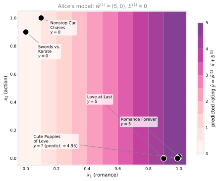
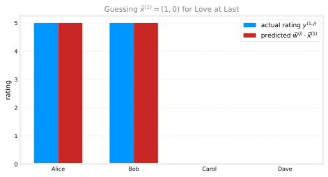

Collaborative Filtering
machine-learning
unsupervised-learning
The first recommender systems algorithm: the movie-ratings notation, predicting ratings with per-user linear models, learning item features straight from the ratings, the combined cost function, and generalizing to binary labels.
Clustering and anomaly detection were both unsupervised learning: no labels, just a search for structure in the data. This page turns to a different part of the course, recommender systems, the algorithms behind “you might also like” on a shopping site or a streaming service’s next-movie suggestions. Recommender systems get surprisingly little attention in academia relative to how much commercial value they move, a large fraction of sales at many online companies is driven directly by what gets recommended. The running example throughout is predicting movie ratings, and the first algorithm built up here is called collaborative filtering.
Framing the Problem
Say you run a movie streaming website, and users rate movies from 0 to 5 stars. Here are four users, Alice, Bob, Carol, and Dave, and their ratings of five movies, with a question mark wherever a user has not rated (usually because they have not watched) a movie. The small gray number next to each row of stars is the numeric rating, the value the math below actually works with.
| Movie | Alice (1) | Bob (2) | Carol (3) | Dave (4) |
|---|---|---|---|---|
| Love at Last | ★★★★★ 5 | ★★★★★ 5 | ☆☆☆☆☆ 0 | ☆☆☆☆☆ 0 |
| Romance Forever | ★★★★★ 5 | ? | ? | ☆☆☆☆☆ 0 |
| Cute Puppies of Love | ? | ★★★★☆ 4 | ☆☆☆☆☆ 0 | ? |
| Nonstop Car Chases | ☆☆☆☆☆ 0 | ☆☆☆☆☆ 0 | ★★★★★ 5 | ★★★★☆ 4 |
| Swords vs. Karate | ☆☆☆☆☆ 0 | ☆☆☆☆☆ 0 | ★★★★★ 5 | ☆☆☆☆☆ 0 |
The pattern is easy to spot by eye: Alice and Bob seem to like romance movies and dislike action movies, Carol and Dave are the opposite, and a good recommender should figure that out automatically from the ratings alone, without being told “these two movies are romance movies” in advance.
A little notation, used throughout this page and reused in the next:
- \(n_u\) = number of users. Here \(n_u = 4\).
- \(n_m\) = number of movies (or, more generally, items). Here \(n_m = 5\).
- \(r(i, j) = 1\) if user \(j\) has rated movie \(i\), and \(0\) otherwise.
- \(y^{(i,j)}\) = the rating user \(j\) gave movie \(i\) (only meaningful when \(r(i, j) = 1\)).
- \(\vec{x}^{(i)}\) = feature vector for movie \(i\) (introduced in the next section).
- \(m^{(j)}\) = number of movies user \(j\) has rated.
- \(\vec{w}^{(j)}, b^{(j)}\) = parameters for user \(j\), one linear model per user.
- \(\vec{w}^{(j)} \cdot \vec{x}^{(i)} + b^{(j)}\) = the predicted rating of movie \(i\) by user \(j\), built from these pieces below.
So, for example, Alice is user 1, and she rated movie 1 (Love at Last) but not movie 3 (Cute Puppies of Love), so \(r(1,1) = 1\) but \(r(3,1) = 0\). And \(y^{(3,2)} = 4\), movie 3 was rated 4 by user 2 (Bob).
One way to frame the recommendation problem: look at the movies a user has not rated, predict how they would rate them, and recommend the ones with the highest predicted ratings. The next few sections build an algorithm that makes exactly that kind of prediction, first assuming the movies come with descriptive features, and then, more powerfully, learning those features directly from the ratings.
Review Questions
1. What do \(n_u\), \(n_m\), \(r(i,j)\), and \(y^{(i,j)}\) each represent?
TipAnswer
\(n_u\) is the number of users, \(n_m\) is the number of movies (items). \(r(i,j) = 1\) if user \(j\) has rated movie \(i\) and \(0\) otherwise, it tracks which entries of the ratings table are actually filled in. \(y^{(i,j)}\) is the rating value user \(j\) gave movie \(i\), only meaningful where \(r(i,j) = 1\).
1. In the table above, what are \(r(2,1)\) and \(y^{(2,1)}\)? What about \(r(2,3)\)?
TipAnswer
\(r(2,1) = 1\) because Alice (user 1) rated movie 2, Romance Forever, and \(y^{(2,1)} = 5\), her rating. \(r(2,3) = 0\) because Carol (user 3) has not rated movie 2, it shows a question mark.
1. At a high level, how does a recommender system decide what to recommend to a user, once it can predict ratings?
TipAnswer
It looks at the movies (or items) the user has not yet rated, predicts what rating they would probably give each one, and recommends the ones with the highest predicted ratings, the ones the user is most likely to enjoy.
1. You have the following table of movie ratings, with numbering starting at 1, so the rating for Football Forever by Elissa is at \((1,1)\). What is the value of \(n_u\)?
| Movie | Elissa | Zach | Barry | Terry |
|---|---|---|---|---|
| Football Forever | ★★★★★ 5 | ★★★★☆ 4 | ★★★☆☆ 3 | ? |
| Pies, Pies, Pies | ★☆☆☆☆ 1 | ? | ★★★★★ 5 | ★★★★☆ 4 |
| Linear Algebra Live | ★★★★☆ 4 | ★★★★★ 5 | ? | ★☆☆☆☆ 1 |
TipAnswer
\(n_u = 4\), the number of users (Elissa, Zach, Barry, Terry). And \(n_m\), the number of movies (items), is \(3\) in this table.
1. In the table above, what is the value of \(r(2,2)\)?
TipAnswer
\(r(2,2) = 0\). \(r(i,j)\) is \(1\) if movie \(i\) has a rating from user \(j\) and \(0\) if it does not, and a question mark indicates there is no rating: user 2 (Zach) has not rated movie 2 (Pies, Pies, Pies).
Predicting Ratings with Known Features
Suppose, temporarily, that each movie comes with descriptive features. Add two features to the table: \(x_1\), how much a movie is a romance movie, and \(x_2\), how much it is an action movie, each on a scale from 0 to 1.
| Movie | \(x_1\) (romance) | \(x_2\) (action) |
|---|---|---|
| Love at Last | 0.90 | 0.00 |
| Romance Forever | 1.00 | 0.01 |
| Cute Puppies of Love | 0.99 | 0.00 |
| Nonstop Car Chases | 0.10 | 1.00 |
| Swords vs. Karate | 0.00 | 0.90 |
Write \(n\) for the number of features, so \(n = 2\) here, and \(\vec{x}^{(i)}\) for the feature vector of movie \(i\), stacked as a column with one entry per feature. For instance, movie 1 (Love at Last) and movie 3 (Cute Puppies of Love) have
\[ \vec{x}^{(1)} = \begin{bmatrix} 0.9 \\ 0 \end{bmatrix}, \qquad \vec{x}^{(3)} = \begin{bmatrix} 0.99 \\ 0 \end{bmatrix} \]
each vector’s top entry being the romance feature \(x_1\) and bottom entry the action feature \(x_2\).
With features in hand, predicting user \(j\)’s rating for movie \(i\) looks a lot like linear regression: a separate parameter vector \(\vec{w}^{(j)}\) and bias \(b^{(j)}\) for every user, predicting
\[ \hat{y}^{(i,j)} = \vec{w}^{(j)} \cdot \vec{x}^{(i)} + b^{(j)} \]
For Alice, user 1, say the parameters turn out to be \(\vec{w}^{(1)} = (5, 0)\) and \(b^{(1)} = 0\). Then the predicted rating for movie 3, Cute Puppies of Love, is
\[ \hat{y}^{(3,1)} = \vec{w}^{(1)} \cdot \vec{x}^{(3)} + b^{(1)} = (5)(0.99) + (0)(0) = 4.95 \]
which is a plausible guess: Alice gave 5 stars to the two romance movies she has seen and 0 to the two action movies, so predicting she would rate this other highly-romantic, zero-action movie at 4.95 fits the pattern nicely.
Alice’s model only cares about \(x_1\) (romance), since \(w_2^{(1)} = 0\), which is exactly why every movie’s predicted rating rises smoothly from left to right and does not move at all going up (more action). Bob’s parameters would be similar, since he also favors romance movies, while Carol’s and Dave’s parameters would instead put all the weight on \(x_2\).
More generally, add a superscript to keep the four users’ parameters distinct: \(\vec{w}^{(1)}, b^{(1)}\) for Alice, \(\vec{w}^{(2)}, b^{(2)}\) for Bob, and so on through \(\vec{w}^{(n_u)}, b^{(n_u)}\). User \(j\)’s predicted rating for movie \(i\) is
\[ \hat{y}^{(i,j)} = \vec{w}^{(j)} \cdot \vec{x}^{(i)} + b^{(j)} \]
This is a lot like linear regression, except instead of fitting one model, there is a separate linear regression model fit for every user, all sharing the same movie features \(\vec{x}^{(i)}\).
Review Questions
1. Write the formula for user \(j\)’s predicted rating of movie \(i\), and explain in words what makes this “a lot like linear regression, but different.”
TipAnswer
\(\hat{y}^{(i,j)} = \vec{w}^{(j)} \cdot \vec{x}^{(i)} + b^{(j)}\). It is like linear regression because the prediction is a linear function of the features \(\vec{x}^{(i)}\). It differs because there is not one shared model, every user \(j\) gets their own parameters \(\vec{w}^{(j)}, b^{(j)}\), so the same movie gets a different predicted rating for each user.
1. With \(\vec{w}^{(1)} = (5, 0)\), \(b^{(1)} = 0\), and movie features \((0.10, 1.00)\) (Nonstop Car Chases), what rating does the model predict for Alice, and does that seem reasonable given her other ratings?
TipAnswer
\(\hat{y} = (5)(0.10) + (0)(1.00) + 0 = 0.5\). That is reasonable: Alice gave 0 stars to both action movies she has rated, so predicting a very low rating for another mostly-action movie fits her pattern.
Learning the Parameters for One User, Then All Users
Given the features \(\vec{x}^{(i)}\), how are the parameters \(\vec{w}^{(j)}, b^{(j)}\) actually learned? Recall \(m^{(j)}\) is the number of movies user \(j\) has rated. Learning user \(j\)’s parameters means minimizing a cost function that looks just like regularized linear regression, except the sum only runs over the movies that user \(j\) has actually rated, the ones where \(r(i,j) = 1\):
\[ \min_{\vec{w}^{(j)},\, b^{(j)}} J(\vec{w}^{(j)}, b^{(j)}) = \frac{1}{2m^{(j)}} \sum_{i \,:\, r(i,j)=1} \left( \vec{w}^{(j)} \cdot \vec{x}^{(i)} + b^{(j)} - y^{(i,j)} \right)^2 + \underbrace{\textcolor[RGB]{232,89,12}{\frac{\lambda}{2m^{(j)}} \sum_{k=1}^{n} \left(w_k^{(j)}\right)^2}}_{\textcolor[RGB]{232,89,12}{\text{regularization term}}} \]
The part in orange is the regularization term, the same one from regularized linear regression, there to keep the parameters small and prevent overfitting; it is colored the same way in every cost function on this page. The \(n\) in it is the number of features, the number of entries in \(\vec{w}^{(j)}\). One simplification is customary in collaborative filtering: since \(m^{(j)}\) is just a constant for a fixed user, dividing by it does not change which \(\vec{w}^{(j)}, b^{(j)}\) minimize the cost, so the \(m^{(j)}\) gets crossed out of both denominators, leaving
\[ J(\vec{w}^{(j)}, b^{(j)}) = \frac{1}{2} \sum_{i \,:\, r(i,j)=1} \left( \vec{w}^{(j)} \cdot \vec{x}^{(i)} + b^{(j)} - y^{(i,j)} \right)^2 + \textcolor[RGB]{232,89,12}{\frac{\lambda}{2} \sum_{k=1}^{n} \left(w_k^{(j)}\right)^2} \]
Minimizing \(J(\vec{w}^{(j)}, b^{(j)})\) gives good parameters for user \(j\) alone. To learn parameters for every user at once, sum this same cost over all \(n_u\) users:
\[ \min_{\substack{\vec{w}^{(1)}, b^{(1)}, \dots \\ \vec{w}^{(n_u)}, b^{(n_u)}}} J\big(\vec{w}^{(1)}, b^{(1)}, \dots, \vec{w}^{(n_u)}, b^{(n_u)}\big) = \frac{1}{2} \sum_{j=1}^{n_u} \sum_{i \,:\, r(i,j)=1} \left( \vec{w}^{(j)} \cdot \vec{x}^{(i)} + b^{(j)} - y^{(i,j)} \right)^2 + \textcolor[RGB]{232,89,12}{\frac{\lambda}{2} \sum_{j=1}^{n_u} \sum_{k=1}^{n} \left(w_k^{(j)}\right)^2} \]
Running gradient descent (or any other optimizer) on this cost, as a function of all the \(\vec{w}^{(j)}, b^{(j)}\) together, produces a good set of parameters for predicting every user’s ratings. It is still fitting a different linear regression model per user, just all learned in one pass.
Review Questions
1. Why does the sum in \(J(\vec{w}^{(j)}, b^{(j)})\) only run over \(i\) where \(r(i,j) = 1\)?
TipAnswer
Because most users have not rated most movies, and there is no target \(y^{(i,j)}\) to compare against for an unrated movie. Restricting the sum to \(r(i,j)=1\) means the cost only ever measures error against ratings that actually exist.
1. Why can the \(\frac{1}{m^{(j)}}\) normalization be dropped from the cost function without changing the learned parameters?
TipAnswer
For a fixed user \(j\), \(m^{(j)}\) is just a constant, it does not depend on \(\vec{w}^{(j)}\) or \(b^{(j)}\). Multiplying a cost function by a positive constant does not change which parameters minimize it, so dropping the \(\frac{1}{m^{(j)}}\) factor leaves the same optimal \(\vec{w}^{(j)}, b^{(j)}\).
1. How does the single-user cost function turn into the cost function for learning all \(n_u\) users’ parameters at once?
TipAnswer
By summing the single-user cost function over all \(n_u\) users, \(j = 1\) through \(n_u\). Minimizing the resulting sum as a function of every \(\vec{w}^{(j)}, b^{(j)}\) together learns good parameters for all the users simultaneously, still one linear model per user.
Learning the Features Themselves
Everything so far assumed the movie features \(x_1\) (romance) and \(x_2\) (action) were handed over in advance. Where would such features actually come from, and what if nobody hand-labels every movie this way? This is where the algorithm gets genuinely interesting: if the parameters \(\vec{w}^{(j)}, b^{(j)}\) for every user are already known, the features can be worked out from the ratings instead.
Suppose, just for illustration, that the four users’ parameters are already known: \(\vec{w}^{(1)} = (5,0)\), \(\vec{w}^{(2)} = (5,0)\), \(\vec{w}^{(3)} = (0,5)\), \(\vec{w}^{(4)} = (0,5)\), all with \(b^{(j)} = 0\). (Alice and Bob’s models weight romance, Carol and Dave’s weight action, matching what was guessed by eye earlier.) Movie 1, Love at Last, was rated 5 by Alice, 5 by Bob, 0 by Carol, and 0 by Dave. What feature vector \(\vec{x}^{(1)}\) would make \(\vec{w}^{(j)} \cdot \vec{x}^{(1)} \approx y^{(1,j)}\) for all four users at once? Trying \(\vec{x}^{(1)} = (1, 0)\):
\[ \vec{w}^{(1)} \cdot \vec{x}^{(1)} = 5, \quad \vec{w}^{(2)} \cdot \vec{x}^{(1)} = 5, \quad \vec{w}^{(3)} \cdot \vec{x}^{(1)} = 0, \quad \vec{w}^{(4)} \cdot \vec{x}^{(1)} = 0 \]

which matches every one of the four ratings for movie 1, so \((1, 0)\) is a solid guess for its features. The same trick can be repeated for every other movie, each time using the four users’ known parameters and the ratings that particular movie received to reverse-engineer a good feature vector.
NoteWhy this needs multiple users
This only works because there are ratings from multiple users of the same movie. With a single user’s parameters, one equation like \(\vec{w}^{(1)} \cdot \vec{x}^{(1)} \approx 5\) has infinitely many solutions for \(\vec{x}^{(1)}\), nowhere near enough information to pin it down. It is having several users’ worth of parameters and ratings for the same movie that turns this into a solvable system, and that shared, cross-user signal is exactly why the algorithm is called collaborative filtering: users collaborate, indirectly, to help the system learn what each item is actually like.
Turning that intuition into a cost function: given parameters \(\vec{w}^{(1)}, b^{(1)}, \dots, \vec{w}^{(n_u)}, b^{(n_u)}\) for all the users, the cost function for one movie’s feature vector \(\vec{x}^{(i)}\) is
\[ J(\vec{x}^{(i)}) = \frac{1}{2} \sum_{j \,:\, r(i,j)=1} \left( \vec{w}^{(j)} \cdot \vec{x}^{(i)} + b^{(j)} - y^{(i,j)} \right)^2 + \textcolor[RGB]{232,89,12}{\frac{\lambda}{2} \sum_{k=1}^{n} \left(x_k^{(i)}\right)^2} \]
summing only over the users \(j\) who actually rated movie \(i\). And to learn the features for all \(n_m\) movies at once, sum this over every movie:
\[ J\big(\vec{x}^{(1)}, \dots, \vec{x}^{(n_m)}\big) = \frac{1}{2} \sum_{i=1}^{n_m} \sum_{j \,:\, r(i,j)=1} \left( \vec{w}^{(j)} \cdot \vec{x}^{(i)} + b^{(j)} - y^{(i,j)} \right)^2 + \textcolor[RGB]{232,89,12}{\frac{\lambda}{2} \sum_{i=1}^{n_m} \sum_{k=1}^{n} \left(x_k^{(i)}\right)^2} \]
Minimizing this as a function of \(\vec{x}^{(1)}\) through \(\vec{x}^{(n_m)}\), given the parameters \(\vec{w}, b\), recovers a good set of features for every movie. This is remarkable: in most machine learning applications, features are handed in from outside, but here the algorithm learns the features itself from nothing but the ratings.
Of course, this section assumed the parameters \(\vec{w}, b\) were already known, which begs the question, and the previous section assumed the features \(\vec{x}\) were already known, which begs the opposite question. Putting the two together resolves both at once.
Review Questions
1. Why can’t a single user’s ratings alone be used to work out a movie’s feature vector?
TipAnswer
One user gives one equation, \(\vec{w}^{(j)} \cdot \vec{x}^{(i)} + b^{(j)} \approx y^{(i,j)}\), and a single linear equation in several unknown features has infinitely many solutions. It takes several users’ worth of parameters and ratings for the same movie to pin down \(\vec{x}^{(i)}\), which is the “collaborative” part of collaborative filtering.
1. Write the cost function for learning a single movie’s features \(\vec{x}^{(i)}\), given the users’ parameters. What does the sum over \(j\) range over?
TipAnswer
\[J(\vec{x}^{(i)}) = \frac{1}{2}\sum_{j\,:\,r(i,j)=1}\left(\vec{w}^{(j)}\cdot\vec{x}^{(i)}+b^{(j)}-y^{(i,j)}\right)^2 + \textcolor[RGB]{232,89,12}{\frac{\lambda}{2}\sum_{k=1}^n \left(x_k^{(i)}\right)^2}\] The sum over \(j\) ranges only over the users who actually rated movie \(i\), that is, the \(j\) with \(r(i,j)=1\).
The Full Collaborative Filtering Cost Function
Put the two ideas together, learning \(\vec{w}, b\) given \(\vec{x}\), and learning \(\vec{x}\) given \(\vec{w}, b\), and both cost functions turn out to contain the exact same error term, just summed in a different order. Summing over users first and, for each user, over the movies they rated, covers exactly the same set of rated pairs \((i, j)\) as summing over movies first and, for each movie, over the users who rated it. Either way, it is a sum over every pair where \(r(i,j) = 1\). That means the two cost functions can be merged into one, a single cost function of \(\vec{w}, b\), and \(\vec{x}\) together:
\[ \min_{\vec{w},\, b,\, \vec{x}} J(\vec{w}, b, \vec{x}) = \frac{1}{2} \sum_{(i,j)\,:\,r(i,j)=1} \left( \vec{w}^{(j)} \cdot \vec{x}^{(i)} + b^{(j)} - y^{(i,j)} \right)^2 + \underbrace{\textcolor[RGB]{232,89,12}{\frac{\lambda}{2} \sum_{j=1}^{n_u} \sum_{k=1}^{n} \left(w_k^{(j)}\right)^2}}_{\textcolor[RGB]{232,89,12}{\text{regularizes } \vec{w}^{(j)}}} + \underbrace{\textcolor[RGB]{232,89,12}{\frac{\lambda}{2} \sum_{i=1}^{n_m} \sum_{k=1}^{n} \left(x_k^{(i)}\right)^2}}_{\textcolor[RGB]{232,89,12}{\text{regularizes } \vec{x}^{(i)}}} \]
Minimizing this single cost function, as a function of all three sets of parameters at once, \(\vec{w}\), \(b\), and \(\vec{x}\), is the collaborative filtering algorithm. The name comes from exactly the intuition built up above: because multiple users collaboratively rate the same movies, the algorithm can work out good features for those movies, and those features in turn let it predict how other users, who have not yet rated that movie, are likely to rate it.
Minimizing \(J\) with gradient descent looks like the familiar update rule from linear regression, just applied to three kinds of parameters instead of one:
\[ w_k^{(j)} \leftarrow w_k^{(j)} - \alpha \frac{\partial}{\partial w_k^{(j)}} J(\vec{w}, b, \vec{x}) \qquad b^{(j)} \leftarrow b^{(j)} - \alpha \frac{\partial}{\partial b^{(j)}} J(\vec{w}, b, \vec{x}) \]
\[ x_k^{(i)} \leftarrow x_k^{(i)} - \alpha \frac{\partial}{\partial x_k^{(i)}} J(\vec{w}, b, \vec{x}) \]
The key conceptual shift from ordinary linear regression: there, \(\vec{x}\) was fixed input data and only \(\vec{w}, b\) were parameters to learn. Here, the features \(\vec{x}\) are also parameters, updated by gradient descent right alongside \(\vec{w}\) and \(b\), all three sets pulled toward whatever values best explain the observed ratings.
Review Questions
1. Why can the two separate cost functions (learning \(\vec{w}, b\) given \(\vec{x}\), and learning \(\vec{x}\) given \(\vec{w}, b\)) be merged into a single cost function \(J(\vec{w}, b, \vec{x})\)?
TipAnswer
Both cost functions sum the exact same squared-error term over the exact same set of rated pairs \((i,j)\) with \(r(i,j)=1\), just in a different summation order (users-then-movies versus movies-then-users). Since they cover identical terms, they can be written as one combined sum over all rated pairs, plus both regularization terms, giving a single \(J(\vec{w},b,\vec{x})\).
1. What is the key difference between how \(\vec{x}\) is treated in ordinary linear regression versus in collaborative filtering?
TipAnswer
In ordinary linear regression, \(\vec{x}\) is fixed input data, only \(\vec{w}\) and \(b\) are learned. In collaborative filtering, the features \(\vec{x}\) are themselves parameters, updated by gradient descent along with \(\vec{w}\) and \(b\), all minimizing the same combined cost function together.
1. In one sentence, why is this algorithm called “collaborative” filtering?
TipAnswer
Because it is only by pooling ratings from multiple users on the same items that the algorithm can work out good features for those items, users collaboratively supply the signal that lets the system learn what each movie is like and predict how still other users will rate it.
1. In which of the following situations will a collaborative filtering system be the most appropriate learning algorithm (compared to linear or logistic regression)?
- You run an online bookstore and collect the ratings of many users. You want to use this to identify what books are “similar” to each other (i.e., if a user likes a certain book, what are other books that they might also like?)
- You’re an artist and hand-paint portraits for your clients. Each client gets a different portrait (of themselves) and gives you 1–5 star rating feedback, and each client purchases at most 1 portrait. You’d like to predict what rating your next customer will give you.
- You subscribe to an online video streaming service, and are not satisfied with their movie suggestions. You download all your viewing for the last 10 years and rate each item. You assign each item a genre. Using your ratings and genre assignment, you learn to predict how you will rate new movies based on the genre.
- You manage an online bookstore and you have the book ratings from many users. You want to learn to predict the expected sales volume (number of books sold) as a function of the average rating of a book.
TipAnswer
(a). Many users rating many overlapping books is exactly the setting collaborative filtering needs: it can learn feature values for every book from the shared ratings, and books with similar learned features are “similar” books. The others fit ordinary supervised learning instead: in (b) every item is rated by exactly one user, so there is no cross-user overlap for collaborative filtering to exploit; in (c) the features (genre) are already hand-assigned and there is a single user, plain regression on given features; and (d) is a straightforward one-feature regression from average rating to sales volume.
Generalizing to Binary Labels
So far the ratings have been star ratings, but a huge share of real recommender systems instead observe binary labels: did the user engage with an item or not, rather than a 1-to-5 star score. A label of 1 might mean a user watched a movie to the end, explicitly hit “like,” purchased a product after seeing it, or clicked an ad; a label of 0 means they were shown the item and did not engage; a question mark still means they have not been shown the item at all, so there is nothing to conclude. A few common ways binary labels get defined in practice:
- Online shopping: 1 if the user purchased the item after being shown it, 0 if not, “?” if never shown.
- Social media: 1 if the user liked or favorited an item after seeing it, 0 if not, “?” if not yet shown.
- Implicit engagement: 1 if the user spent at least some threshold of time (say 30 seconds) with an item, 0 if they saw it and moved on quickly.
- Online advertising: 1 if the user clicked a shown ad, 0 if they did not, “?” if the ad was never shown.
Generalizing the algorithm to this setting follows exactly the same path that took linear regression to logistic regression for binary classification back in the first course. Instead of predicting the rating directly as \(\vec{w}^{(j)} \cdot \vec{x}^{(i)} + b^{(j)}\), predict the probability that \(y^{(i,j)} = 1\) by passing that same linear combination through the sigmoid function \(g\):
\[ P\big(y^{(i,j)} = 1\big) = f_{(\vec{w},b,\vec{x})}(\vec{x}) = g\big(\vec{w}^{(j)} \cdot \vec{x}^{(i)} + b^{(j)}\big), \qquad g(z) = \frac{1}{1 + e^{-z}} \]
The cost function needs the matching change too, replacing squared error with the logistic loss used for binary classification (also called binary cross-entropy):
\[ L\big(f_{(\vec{w},b,\vec{x})}(\vec{x}),\, y^{(i,j)}\big) = -y^{(i,j)} \log\big(f_{(\vec{w},b,\vec{x})}(\vec{x})\big) - \big(1 - y^{(i,j)}\big) \log\big(1 - f_{(\vec{w},b,\vec{x})}(\vec{x})\big) \]
This is the loss for a single example, with \(f_{(\vec{w},b,\vec{x})}(\vec{x})\) standing for the model’s predicted probability from above; the subscript spells out that the prediction depends on all three sets of parameters \(\vec{w}, b, \vec{x}\). Summing this loss over every rated pair, exactly the same set of pairs as before, gives the collaborative filtering cost function for binary labels:
\[ J(\vec{w}, b, \vec{x}) = \sum_{(i,j)\,:\,r(i,j)=1} L\Big(f_{(\vec{w},b,\vec{x})}(\vec{x}),\; y^{(i,j)}\Big) \]
Minimizing this cost function as a function of \(\vec{w}\), \(b\), and \(\vec{x}\), exactly as before, gives a collaborative filtering system that predicts the probability a user will engage with an item, rather than a star rating. This single change significantly widens what the algorithm can be used for: most user interaction data on the web is naturally binary (clicked or not, purchased or not, liked or not) rather than a neatly filled-in star rating.
Review Questions
1. Give two examples of how a binary label of 1 versus 0 versus “?” might be defined on a real website.
TipAnswer
Any two of, for example: online shopping (1 = purchased after being shown, 0 = shown but not purchased, ? = not shown); social media (1 = liked/favorited, 0 = shown but not liked, ? = not shown); implicit engagement (1 = spent at least 30 seconds with the item, 0 = shown but disengaged quickly); online advertising (1 = clicked the ad, 0 = shown but not clicked, ? = ad never shown).
1. How does the prediction formula change when moving from star ratings to binary labels, and which earlier algorithm does this generalization mirror?
TipAnswer
Instead of predicting the rating directly as \(\vec{w}^{(j)}\cdot\vec{x}^{(i)}+b^{(j)}\), the model predicts the probability that \(y^{(i,j)}=1\) as \(g(\vec{w}^{(j)}\cdot\vec{x}^{(i)}+b^{(j)})\), passing the same linear combination through the sigmoid function \(g\). This mirrors exactly how logistic regression generalizes linear regression for binary classification.
1. Which loss function replaces squared error in the binary-label cost function, and over which pairs \((i,j)\) is it summed?
TipAnswer
The logistic loss (binary cross-entropy), \(L(f,y) = -y\log(f) - (1-y)\log(1-f)\), replacing squared error. It is summed over exactly the same set of pairs as before, every \((i,j)\) with \(r(i,j)=1\), that is, every user-item pair where a label actually exists.
1. For recommender systems with binary labels \(y\), which of these are reasonable ways of defining when \(y\) should be 1 for a given user \(j\) and item \(i\)? (Check all that apply.)
- \(y\) is 1 if user \(j\) purchases item \(i\) (after being shown the item)
- \(y\) is 1 if user \(j\) has been shown item \(i\) by the recommendation engine
- \(y\) is 1 if user \(j\) fav/likes/clicks on item \(i\) (after being shown the item)
- \(y\) is 1 if user \(j\) has not yet been shown item \(i\) by the recommendation engine
TipAnswer
(a) and (c). Purchasing an item, or faving/liking/clicking on it, is a real signal of the user’s preference for that item, engagement after being shown it. Merely being shown an item, (b), says nothing about whether the user liked it, and (d), not yet being shown an item, is exactly the situation the “?” entries represent, no label exists at all there.
That covers the core structure and cost function of collaborative filtering, for both star ratings and binary labels. There is more to making it work well in practice, including a subtlety around brand-new users with no ratings yet, and how to implement the whole thing efficiently, which the next page picks up.